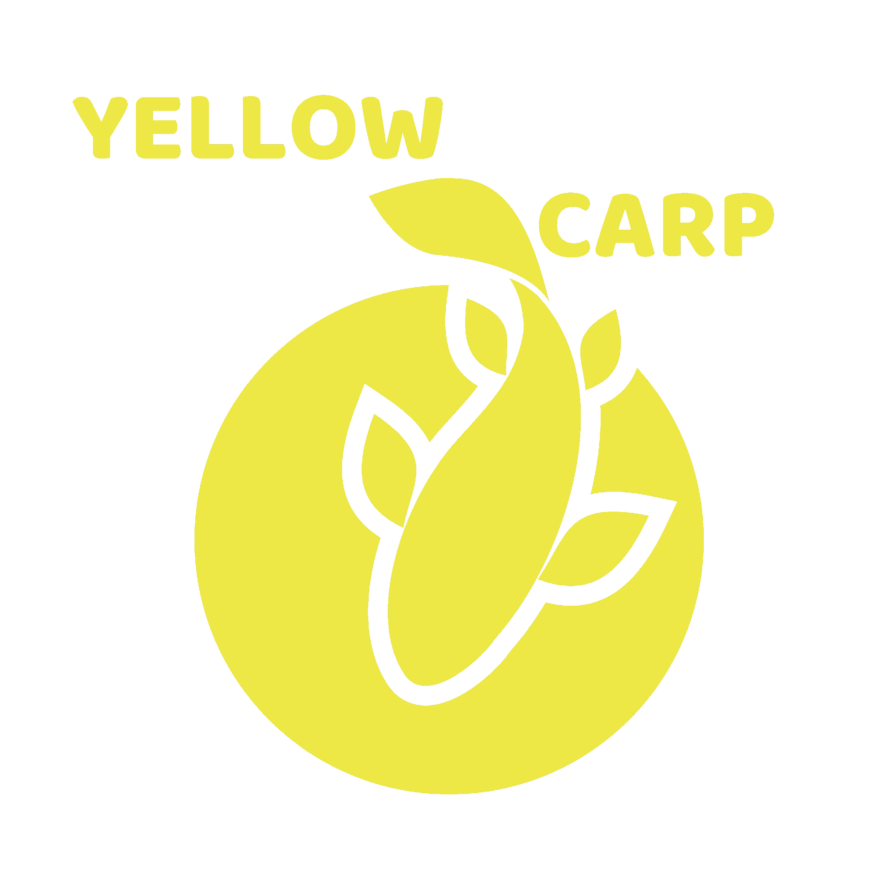

Yellow Carp
Főoldal
Szolgáltatások
Alkatrészek
Kapcsolat
GY.I.K

Az alkatrészek még feltöltés alatt vannak...
További kérdésed van? Vedd fel velem a
kapcsolatot
!
×
© 2025 Yellow Carp Orsószervíz |
yellowcarp.reels@gmail.com
|
+36 20 411 3760